1과목: 수처리공정
1. 응집제에 관한 설명으로 옳지 않은 것은?
2. 유량이 50,000m3/d이고, 표면부하율은 24m3/m2ㆍd이며, 체류시간이 6시간일 때 침전지의 깊이(m)는? (단, 깊이와 폭의 비는 2 : 1이다.)
3. 급속혼화시설에 관한 설명으로 옳은 것은?
4. 급속여과지에 관한 설명으로 옳은 것을 모두 고른 것은?
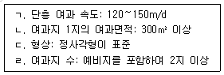
5. 급속여과지의 여과용 자갈에 관한 설명으로 옳은 것은?
6. 급속여과지의 세척에 관한 설명으로 옳은 것은?
7. 역세척설비에서 트로프에 관한 설명으로 옳지 않은 것은?
8. 전염소 또는 중간염소처리와 처리대상물질 간의 연결로 옳지 않은 것은?
9. 자외선 소독장치에 관한 설명이다. ( )에 들어갈 내용을 순서대로 나열한 것은?
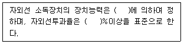
10. 정수지에 관한 설명으로 옳지 않은 것은?
11. 추적자 실험에서 추적자 선택시 고려되어야 할 요건을 모두 고른 것은?
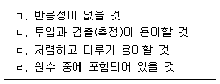
12. 잔류농도 1.0 mg/L인 염소소독 공정에서 5분만에 90.0 %의 세균이 살균된다면 99.0 % 살균을 위하여 필요한 시간(min)은? (단, 세균의 사멸은 Chick의 법칙에 따른다.)
13. 염소가스 저장시설에 설치하는 제해설비에 관한 설명으로 옳지 않은 것은?
14. 액화염소 주입설비에 관한 설명으로 옳은 것은?
15. 배출수 처리공정에 관한 설명으로 옳은 것은?
16. 배슬러지지를 개선한 폭기공정에서 망간농도 저감에 관한 설명으로 옳은 것은?
17. 입상활성탄의 맛ㆍ냄새물질에 관한 설명으로 옳지 않은 것은?
18. 해수담수화 공정에서 역삼투 막모듈의 세척에 관한 설명으로 옳지 않은 것은?
19. 막오염의 부착층 중 케이크층에 관한 설명으로 옳은 것은?
20. 오존 기반 고도산화공정(AOP)에 관한 설명이다. ( )에 들어갈 내용을 순서대로 나열한 것은?
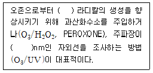
2과목: 수질분석 및 관리
21. 먹는물수질공정시험기준상 총칙에 관한 내용으로 옳지 않은 것은?
22. 먹는물수질공정시험기준상 시안시험용 시료의 시료채취 및 보존방법으로 옳은 것을 모두 고른 것은?
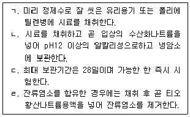
23. 수질오염공정시험기준상 클로로필a 시료의 보존방법으로 옳지 않은 것은?
24. 먹는물수질공정시험기준상 탁도의 정량한계로 옳은 것은?
25. 먹는물수질공정시험기준상 적정법으로 염소이온을 측정한 결과가 다음과 같을 때 염소이온의 농도(mg/L)는?
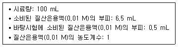
26. 먹는물 수질감시항목 운영 등에 관한 고시상 나이트로사민류 측정에 관한 설명으로 옳지 않은 것은?
27. 먹는물 수질감시항목 운영 등에 관한 고시상 라돈(Radon)에 관한 설명으로 옳지 않은 것은?
28. 소독제 접촉시간 산정을 위한 정수지와 환산계수에 관한 설명으로 옳은 것을 모두 고른 것은?
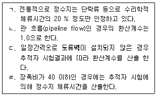
29. 정수처리공정 진단을 위한 추적자 시험에 관한 설명이다. 설명된 추적물질로 옳은 것은?
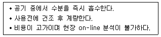
30. 여과지에서 탁도 감시기능의 강화를 위하여 활용할 수 있는 수질계측기로 옳은 것은?
31. 수돗물 생산량이 5,000m3/h인 정수장에서 염소주입량이 300kg/d이고, 정수지 유출지점의 잔류염소농도가 0.8mg/L 일 때, 염소요구량(mg/L)은?
32. 수처리제의 기준과 규격 및 표시기준상 입상활성탄 성분규격 기준으로 옳지 않은 것은?
33. 막여과 정수시설의 막오염지수에 관한 설명으로 옳지 않은 것은?
34. 먹는물관리법령상 검사기관 준수사항으로 옳지 않은 것은? (단, 위임ㆍ위탁 규정은 고려하지 않는다.)
35. 먹는물 수질기준 및 검사 등에 관한 규칙상 총대장균군의 수질기준에 관한 내용이다. ( )에 들어갈 내용으로 옳은 것은?
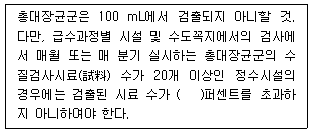
36. 먹는물 수질감시항목 운영 등에 관한 고시상 원수의 감시항목에 해당되지 않는 것은?
37. 먹는물 수질기준 및 검사 등에 관한 규칙상 정수장별 수도관 노후지역 수도꼭지에 대한 검사항목으로 옳지 않은 것은?
38. 수도법령상 수돗물평가위원회의 업무 및 조직과 운영에 관한 사항으로 옳지 않은 것은?
39. 수도법령상 일반수도사업자가 외부기관에 의뢰ㆍ위탁 할 수 없는 검사를 모두 고른 것은?
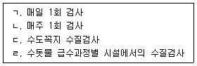
40. 수도법령상 수도시설의 관리에 관한 교육 규정에 따라 2년 마다 35시간 교육을 받아야 하는 대상자를 모두 고른 것은?
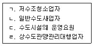
3과목: 설비운영(기계·장치 또는 계측기 등)
41. 차아염소산나트륨의 저장에 관한 설명으로 옳지 않은 것은?
42. 혼화기에 의한 추가적인 손실수두가 없고 혼화효과가 좋으며 혼화강도를 조절할 수 있는 혼화방법은?
43. 횡류식 침전지 슬러지의 배출방식으로 옳은 것을 모두 고른 것은?
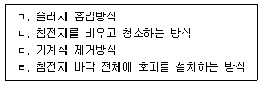
44. 염소가스 중화장치의 구성요소가 아닌 것은?
45. 하부집수장치의 기능이 아닌 것은?
46. 배오존 방법으로 옳지 않은 것은?
47. 플록형성지에 관한 설명으로 옳지 않은 것은?
48. 펌프의 캐비테이션 방지 대책으로 옳은 것은?
49. 다음은 원심펌프의 원리에 관한 설명이다. ( )에 들어갈 내용을 순서대로 옳게 나열한 것은?
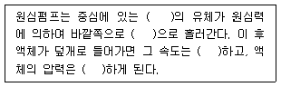
50. 밸브의 공기압식 구동장치가 아닌 것은?
51. 펌프의 유지관리를 위하여 평상시 준비해 두어야 하는 예비품이 아닌 것은?
52. 3상3선식 저압배전선로에서 부하까지의 거리가 45m 이고, 부하의 최대 사용전류는 100 A이다. 부하의 전압강하를 4 V로 하려면 전선의 최소 단면적mm2)은 약 얼마인가?
53. 변압기를 V결선하여 3상 운전을 하는 경우 변압기 이용률(%)은?
54. 변전소내 전력기기를 낙뢰로부터 보호하는 기기는?
55. 소독설비에서 소독제의 주입제어에 관한 설명으로 옳지 않은 것은?
56. 상수도용 제어설비에 관한 설명으로 옳지 않은 것은?
57. 전자식유량계에 관한 설명으로 옳지 않은 것은?
58. 수량, 수위, 수질 등을 조절하는 조절기기에 관한 설명으로 옳지 않은 것은?
59. 산업안전보건법 시행령에서 정하는 안전인증대상기계를 모두 고른 것은?
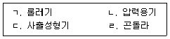
60. 산업안전보건법 법령상 근로자 안전보건교육의 정기교육에 해당하지 않는 것은?
4과목: 정수시설 수리학
61. 물의 성질에 관한 설명으로 옳은 것은?
62. 표면장력과 동점성계수를 [MLT]계 차원으로 나타낸 것은? (단, [M]은 질량, [L]은 길이, [T]는 시간을 표시하는 차원이다.)
63. 유량측정에 사용되는 도구와 방법에 관한 설명으로 옳은 것을 모두 고른 것은?
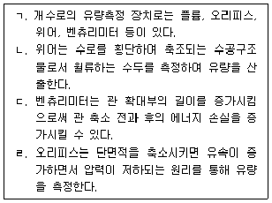
64. 위어(weir) 폭 3.0m, 위어 높이 1.5m, 월류수심 0.5m일 때 월류량(m3/s)은 약 얼마인가? (단, 단수축은 없고, 접근 유속은 무시하며, Francis 공식을 사용한다.)
65. 유체의 특성에 관한 설명으로 옳은 것은?
66. 베르누이 방정식에 관한 설명으로 옳지 않은 것은?
67. 관수로의 마찰손실계수(f)에 관한 설명으로 옳지 않은 것은? (단, 관수로의 흐름은 층류이다.)
68. 다음 조건으로 구성된 2층 여과지에서 표면세척을 할 경우 손실수두(cm)는 약 얼마인가? (단, 모래층의 팽창률은 37 %, 안트라사이트층의 팽창률은 25 %, 팽창된 모든 여과층의 공극률은 0.6 이다.)
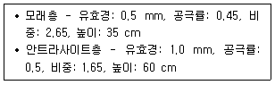
69. 원형관의 직경이 200 mm, 길이가 1,000 m인 관수로의 입구와 출구의 압력차가 0.1 kgf/cm2일 때 유속(m/s)은 약 얼마인가? (단, 중력가속도는 9.8 m/s2, 마찰손 실계수는 0.03, 기타 손실은 무시한다.)
70. 랑게리아지수(LI)에 관한 설명으로 옳지 않은 것은?
71. 수면차가 15 m인 두 수조를 길이 20 m의 원형관으로 연결하여 0.6m3/s의 유량으로 흐르게 하기 위한 관의 직경(m)은 약 얼마인가? (단, Manning의 평균유속공식을 사용하고, 관의 조도계수(n)는 0.012, 손실은 무시한다.)
72. 혼화지에서 속도경사(G)를 결정하는 요소가 아닌 것은?
73. 고속응집침전지에 관한 설명으로 옳은 것은?
74. 전양정 30 m, 회전속도 900 rpm, 최고효율점의 양수량 300m3/h으로 운영되는 펌프의 비속도(Ns)는 약 얼마인가?
75. 동력 15,000 kW, 효율 80 %인 펌프를 이용하여 30 m 위의 저수지로 물을 양수하려고 한다. 총손실수두가 5 m일 때, 양수량(m3/s)은 약 얼마인가? (단, 중력가 속도는 9.8 m/s2, 물의 단위중량은 1,000 kgf/m3이다.)
76. 펌프의 운전에 관한 내용으로 옳지 않은 것은?
77. 유량 2m3/s의 물을 양정 10m의 높이로 양수하는데 필요한 펌프의 동력(HP)은? (단, 펌프 효율은 85%, 마찰손실수두 2m, 중력가속도는 9.8 m/s2, 물의 단위중량은 1,000 kgf/m3, 기타손실은 무시한다.)
78. 펌프의 설치에 관한 설명으로 옳지 않은 것은?
79. 펌프의 제원 결정과 관계없는 것은?
80. 지름이 80cm인 원형관에 물이 가득차서 흐르고 있다. 관로의 유속이 2.2m/s일 때, 유량(m3/s)은 약 얼마인가?